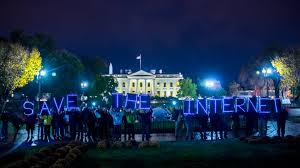

Government Censorship

Governments around the world use censorship to regulate what information the public can access.
Reasons Governments Censor
- National Security
Preventing leaks of sensitive military or intelligence information. - Political stability
Limiting speech that may cause unrest or challenge government authority. - Public morality
Regulating explicit, violent, or offensive content. - Cultural preservation
Restricting media that conflicts with cultural or religious values.
Forms of government censorship:
- Internet filtering: blocking social media, news sites, or certain searches
- Media control: restricting what journalists can publish
- Educational censorship: limiting topics about history, social issues, or science
- Broadcast regulations: controlling what is shown on TV and radio
Common Examples:
- Some countries restrict political content online
- Some block foreign news
- Some regulate violent or explicit content on television
- Some limit speech about government leaders
Government censorship is one of the most powerful and controversial forms because it affects entire populations.